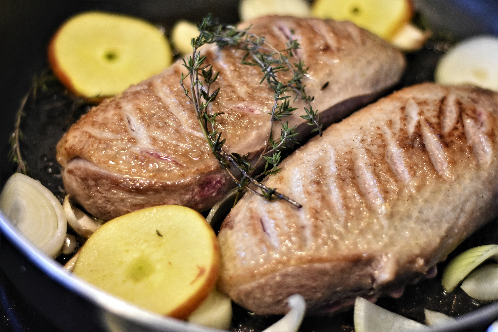
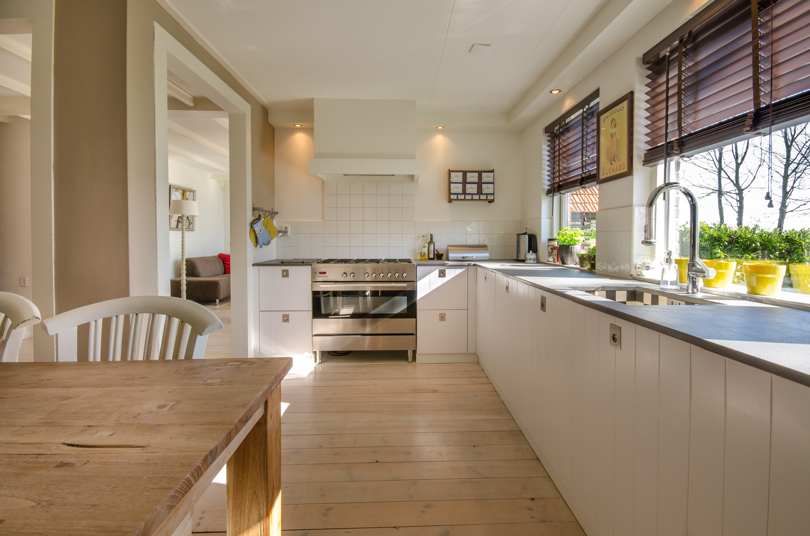
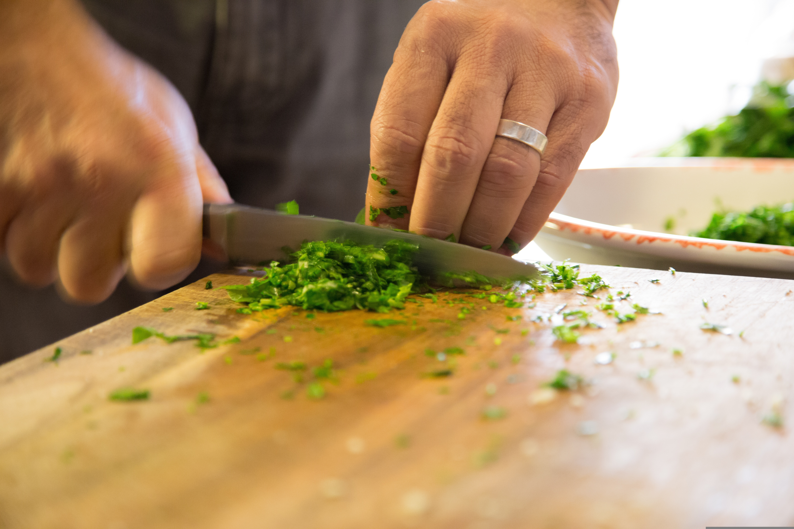
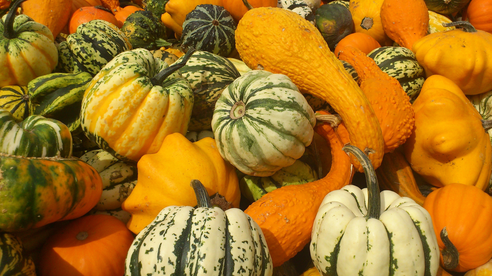

Recettes vedettes
Des classiques d’ici et d’ailleurs, testés par nos étudiant(e)s.
Cégep Montmorency
Cuisine MOMO est un projet du Cégep Montmorency pour découvrir la cuisine au quotidien : des recettes accessibles, des techniques de base expliquées simplement, et un coup d’oeil sur les produits de saison au Québec.


Des classiques d’ici et d’ailleurs, testés par nos étudiant(e)s.

Couper, saisir, rôtir : maîtrisez l’essentiel sans équipement compliqué.

Quoi cuisiner selon le mois? Misez sur la fraîcheur locale.